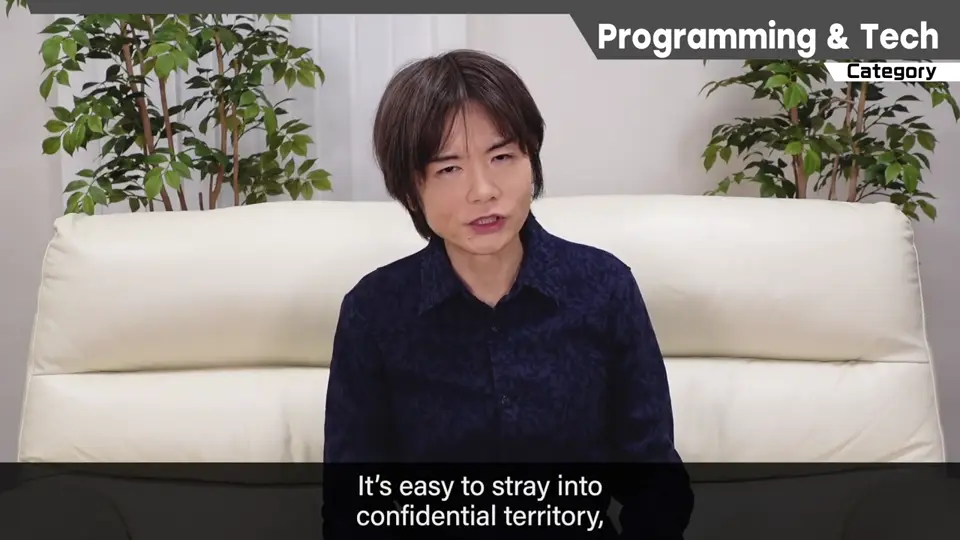
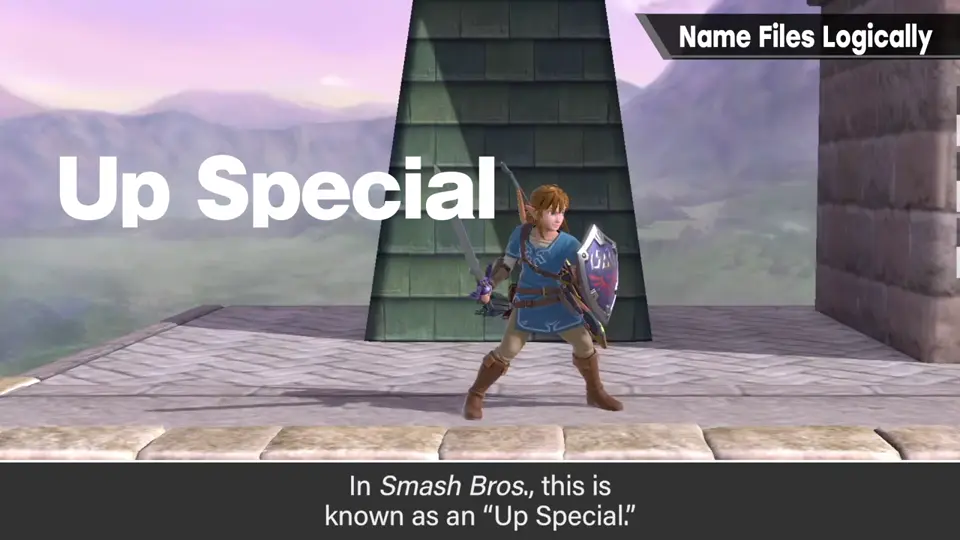
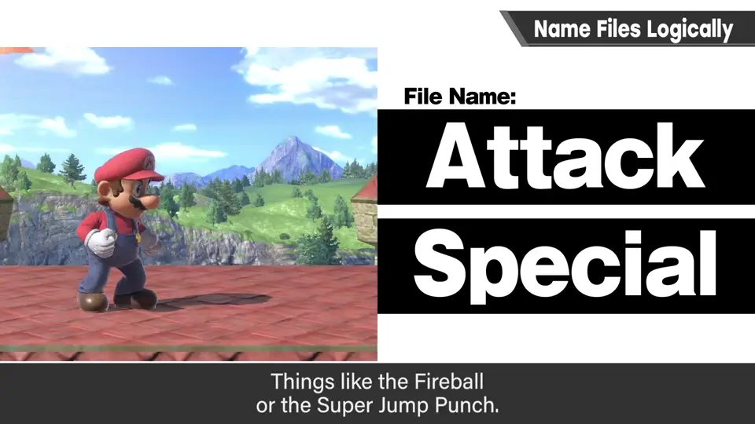
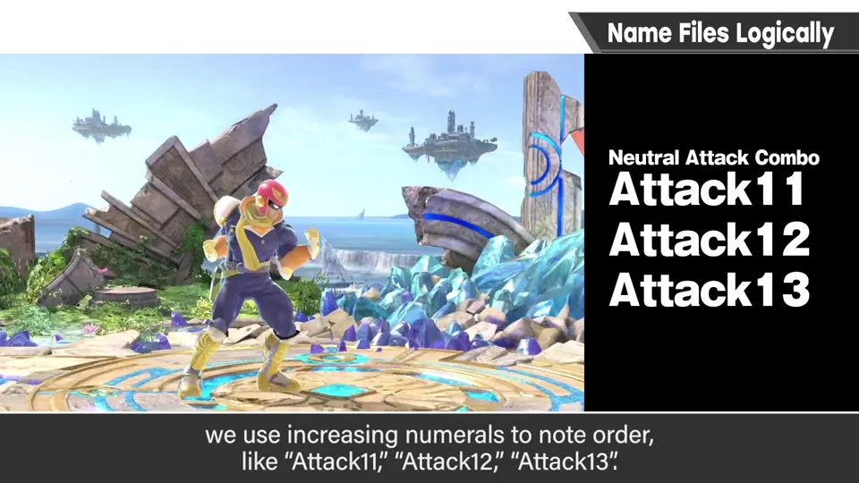
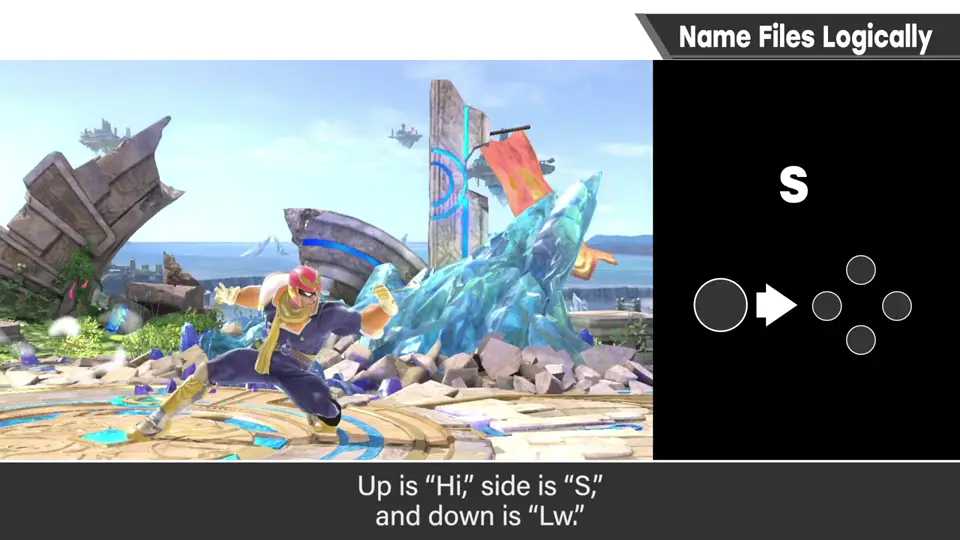
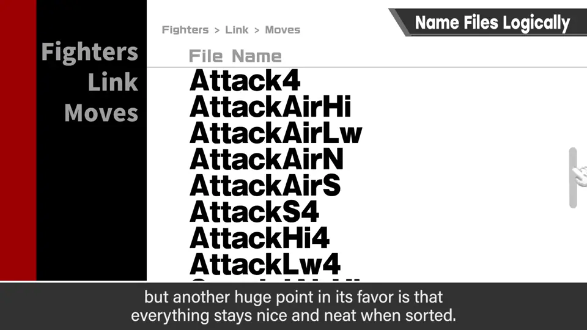
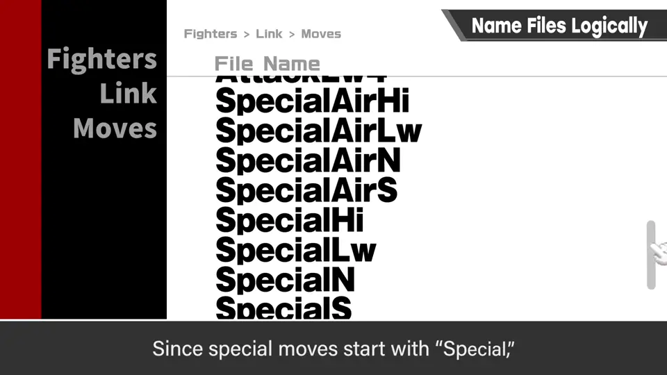
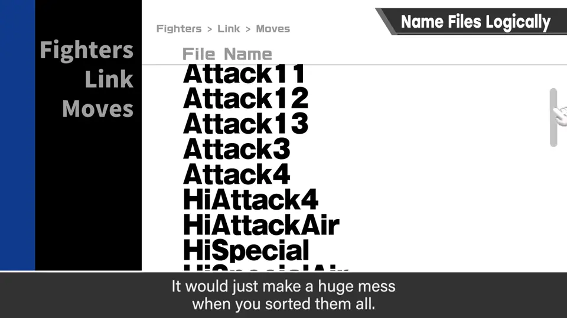
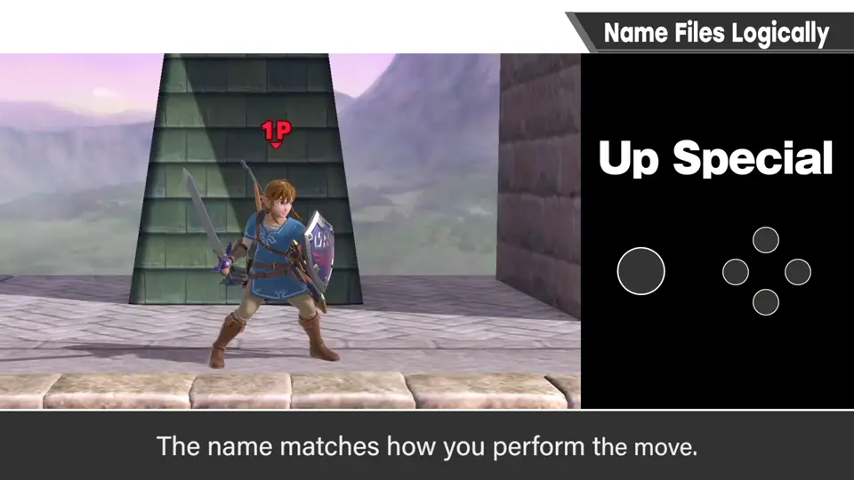
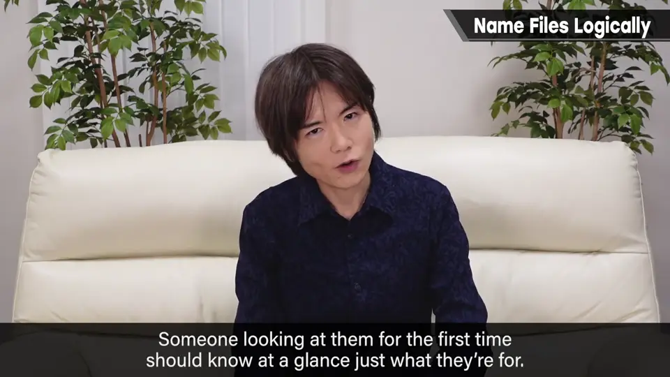

速览
「程序与技术」分类讲直接面对电脑的技术话题，但这类话题容易触及机密，且因开发环境、团队规模、对象机种差异很大，所以集数较少，只在没问题的范围内讲概要。《大乱斗》的「上必殺技」（Up Special），樱井有时会反过来说成「必殺技上」，为什么？因为开发名称就是「必殺技上」，整个团队都这么叫，这有合理的理由。每个招式都有文件名（也可说是标签名），从初代《大乱斗》开发时定下并沿用至今：A 键的普通攻击叫 Attack（普通的拳、踢）；B 键的必杀技叫 Special（如火球、超级跳跃拳）。例如弱攻击是 Attack1，Smash 攻击是 Attack4；弱攻击的连击是 Attack11、12、13，数字递增。强攻击、Smash 攻击、必杀技等附上输入方向：中央 N（Neutral）、上 Hi、横 S、下 Lw；按这个规则，横 Smash 攻击写作 AttackS4；空中技加 Air，如 AttackAirN。最大的好处是谁看文件名都马上知道是什么招式，另一个很大的好处是排序时排列得比较整齐：Attack 按弱→强→Smash 按强度数字变大，必杀技带 Special 所以是另一类，容易区分。如果写成 SAttack、HiAttack 这种把方向放前面的写法，排序时就乱七八糟；强度用数字以外的方式也不好。SpecialHi 直接翻成日语就是「必殺技上」。那正式名为什么叫「上必殺技」？因为玩家的操作是从方向开始：一边按上一边按必杀键就是上必杀技，操作方法和名称一致。招式的开发名和正式名不同，他有时会说反，请见谅。开发用的文件名、标签名要简洁易懂，让第一次接触的人一眼看明白；太短打字轻松，但意思难懂，平衡到能看懂的程度为好。还有一件特别想说的：日本开发者尽量别用罗马字文件名，尤其大项目，海外的人难以理解，之后回看时海外的人会看不懂；他常提醒团队，但仍层出不穷——不是只有做的人懂就行。
1. 「必殺技上」？ 0:03
「程序与技术」分类讲直接面对电脑的技术话题。不过这类话题容易触及机密，而且因开发环境、团队规模、对象机种不同差异很大，所以集数会较少，只在没问题的范围内讲讲概要。


《大乱斗》的「上必殺技」（Up Special），樱井有时会反过来说成「必殺技上」。为什么？
2. 文件名规则 1:10
每个招式都有文件名（也可以说是标签名），从初代《大乱斗》开发时定下，沿用至今。A 键的普通攻击叫 Attack（普通的拳、踢等）；B 键的必杀技叫 Special（如火球、超级跳跃拳）。


数字表示强度：弱攻击是 Attack1，Smash 攻击是 Attack4；弱攻击连击是 Attack11、12、13，数字递增。
强攻击、Smash 攻击、必杀技等再附上输入方向：中央 N（Neutral）、上 Hi、横 S、下 Lw。按这个规则，横 Smash 攻击写作 AttackS4；空中技加 Air。

Attack11 Attack12 Attack13 # 弱攻击连击
Attack3 # 强攻击
Attack4 AttackS4 # Smash 攻击
AttackAirN AttackAirHi AttackAirLw # 空中攻击
SpecialN SpecialHi SpecialS SpecialLw # 必杀技3. 为什么这样排 2:25
最大的好处是：谁看文件名都马上知道是哪个招式。另一个很大的好处是，排序时排列得比较整齐。


Attack 按弱 → 强 → Smash，强度数字变大，排序时就整齐；必杀技带 Special，自成一类，容易区分。

4. 开发名与正式名 3:10
SpecialHi 直接翻成日语就是「必殺技上」。那正式名称为什么叫「上必殺技」？因为玩家的操作是从方向开始：一边按上一边按必杀键，就是上必杀技——操作方法和名称一致。

招式的开发名和正式名不同，有点复杂，他有时会不自觉说反，请见谅。
5. 命名建议 3:54

还有一件特别想说的：日本开发者请尽量别用罗马字文件名。尤其是大项目，海外的人很难理解，之后回看时会看不懂。
他常提醒团队，但仍层出不穷——不是只有做的人懂就行。
自测题
1. 《大乱斗》中 Attack 和 Special 分别对应什么？
Attack：A 键普通攻击；Special：B 键必杀技。 1:10
2. 为什么方向放在名称后面而不是前面？
排序时能按 Attack/Special 及强度整齐排列；方向在前会排得乱七八糟。 2:25
3. 樱井对日本开发者的命名提醒是什么？
尽量别用罗马字文件名，海外成员难以理解。 4:12